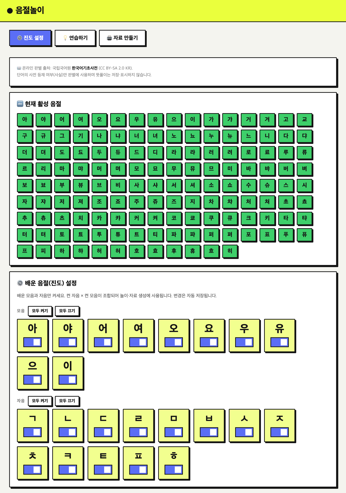
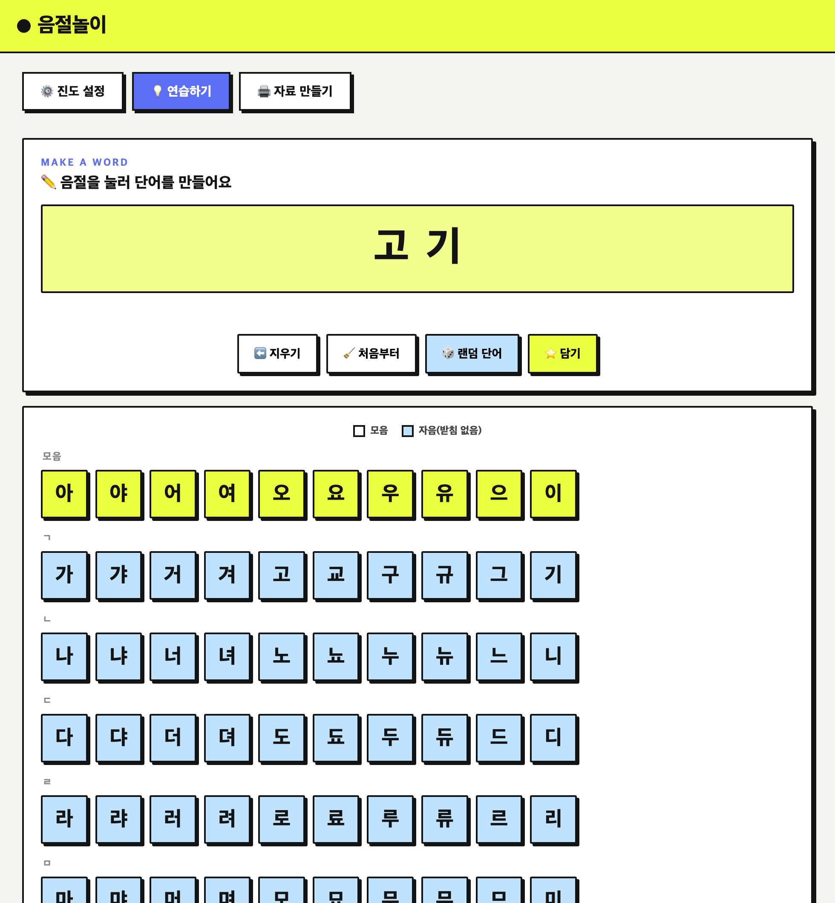
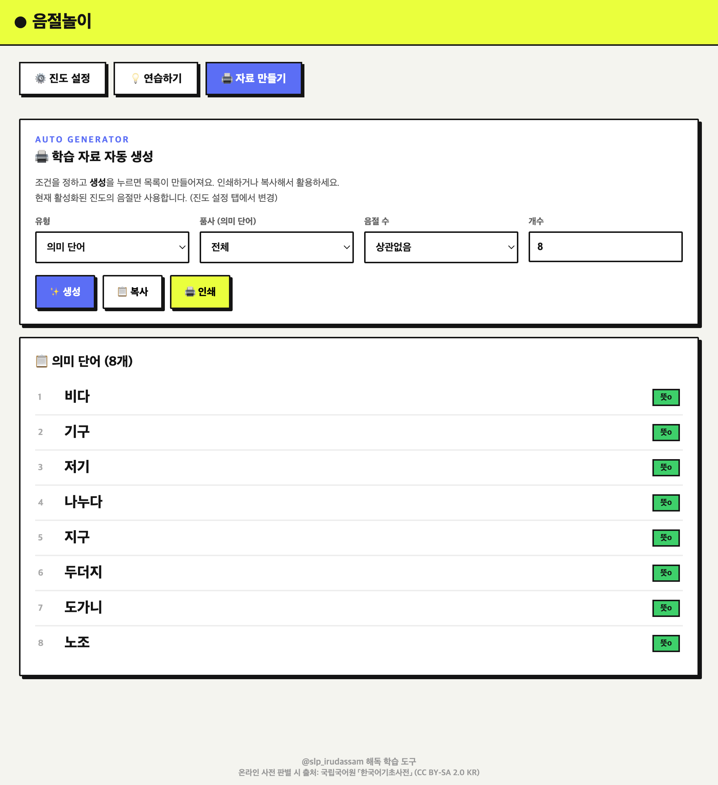

음절놀이는 자음과 모음을 조합해 음절·단어를 만들며 읽기(해독)를 연습하는 도구예요.
아이가 배운 글자만 켜서, 딱 그 범위 안의 음절만 연습하고 학습지로도 뽑을 수 있습니다.
① 진도 설정→
② 연습하기→
③ 자료 만들기
1 진도 설정 — 배운 글자만 켜기
가장 먼저 하는 단계예요. 아이가 배운 모음·자음만 켜 두면, 나머지 화면이 모두 그 범위로 맞춰집니다.

- 모음·자음 박스의 파란 스위치를 켜면(연두색) 그 글자가 사용돼요. 배운 것만 켜세요.
- 모두 켜기 모두 끄기 로 모음·자음을 한 번에 조절할 수 있어요.
- 맨 위 현재 활성 음절에서 지금 조합되는 음절을 한눈에 확인해요.
- 예) 자음 ㄱ 과 모음 아 이 만 켜면 → 가 · 기 만 나옵니다.
- 변경은 자동 저장되어 다음에 열어도 그대로 유지돼요.
2 연습하기 — 눌러서 단어 만들기
켠 글자로 아이와 함께 음절·단어를 만들며 소리 내어 읽어 봅니다.

- 아래 자판의 글자를 누르면 위 칸에 하나씩 쌓여요. (최대 4음절)
- 🎲 랜덤 단어 켠 음절로 무작위 단어를 자동으로 만들어 줘요.
- ⬅️ 지우기 마지막 글자 삭제 · 🧹 처음부터 전체 지우기.
- ⭐ 담기 마음에 든 단어를 아래 내가 담은 단어에 모아 둘 수 있어요.
3 자료 만들기 — 학습지 자동 생성
연습한 범위로 단어·문장 목록을 자동으로 만들어 인쇄하거나 복사할 수 있어요.

- 유형을 골라요 — 의미 단어 / 무의미 단어(비단어) / 문장.
- 품사 · 음절 수 · 개수를 정하고 ✨ 생성 을 누르면 목록이 나와요.
- 📋 복사 다른 곳에 붙여넣기 · 🖨️ 인쇄 학습지로 바로 출력.
- 진도 설정에서 켠 음절만 사용돼요. 목록이 부족하면 글자를 더 켜 보세요.
💡 알아두면 좋은 점
● 의미/소리 자동 구분 — 온라인 사전으로 실제 뜻이 있는 단어인지 판별해, 무의미 단어를 만들 때 진짜 단어는 자동으로 빠져요.● 자동 저장 — 진도 설정과 담은 단어는 이 기기에 저장되어 다음에 열어도 유지됩니다.
● ㅇ 계열(아·야·어…)은 모음 박스가 대신하므로 자음 목록에는 ㅇ이 없어요.